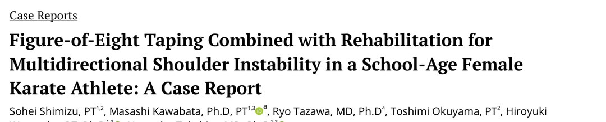
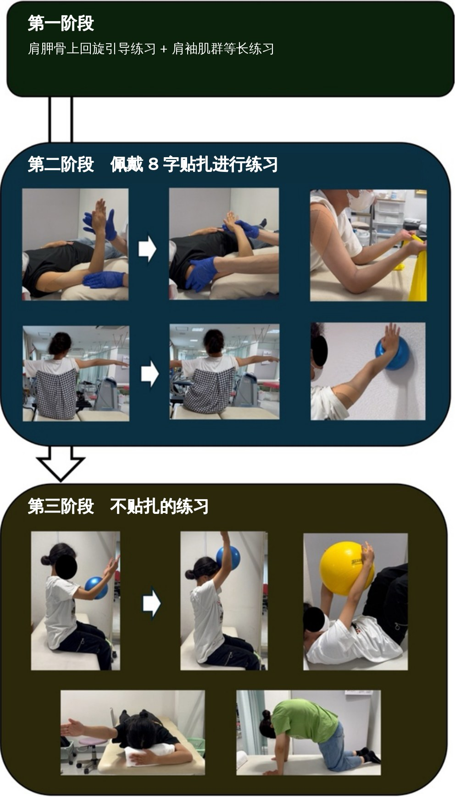
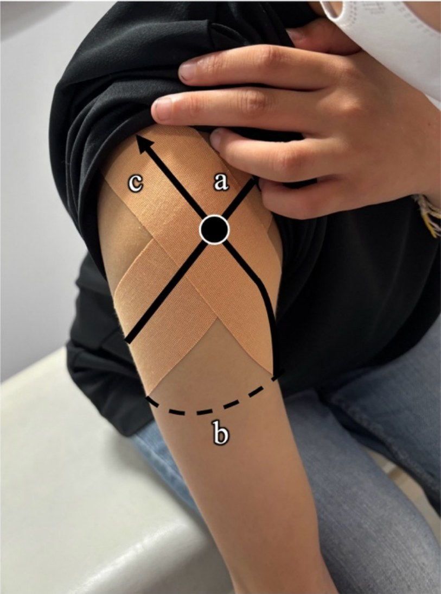
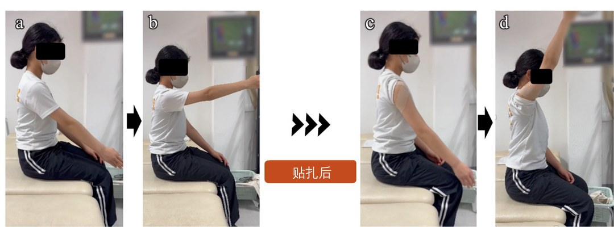
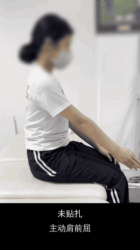
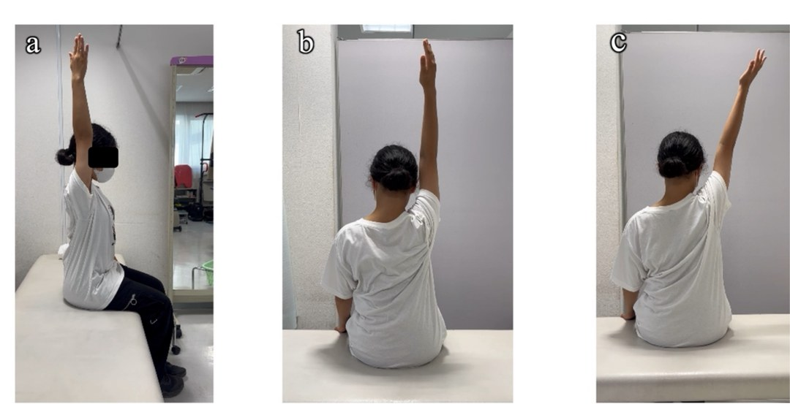
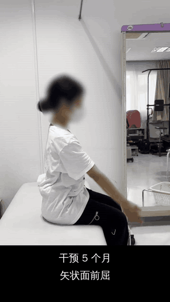

🔖原文首页（IJSPT 2026 年第 21 卷第 7 期）
📚 文献卡片
▪ 英文原题：Figure-of-Eight Taping Combined with Rehabilitation for Multidirectional Shoulder Instability in a School-Age Female Karate Athlete: A Case Report（8 字贴扎结合康复治疗学龄期女子空手道运动员多向肩不稳：病例报告）
▪ 作者：Sohei Shimizu, Masashi Kawabata, Ryo Tazawa, Toshimi Okuyama, Hiroyuki Watanabe, Naonobu Takahira
▪ 机构：日本北里大学医学研究科、保健卫生学部、医学部 · 黑河内医院康复科
▪ 期刊：International Journal of Sports Physical Therapy（IJSPT）
▪ 年卷期：2026;21(7):693-701
▪ PMCID：PMC13327837
▪ 文章类型：病例报告（Case Report）
▪ 证据级别：5 级
▪ 关键词：Multidirectional shoulder instability · glenohumeral joint · figure-of-eight taping · rehabilitation · karate athlete
多向肩不稳（MDI）指盂肱关节在至少两个方向出现有症状的半脱位或脱位，常表现为不适、恐惧感和慢性肩痛，诊断和治疗都很棘手。
• 首选保守：以肩袖和肩胛周围肌力训练为核心，恢复动态稳定；无效再考虑手术
• Watson 方案：近年被证实对 MDI 有效，但受试者平均 21.8 岁，且大量动作需要精细控制肩胛和肩袖
• 难点：学龄儿童身体功能和运动控制还在发育，不稳很严重时，连练习都难以准确完成
"In such cases, shoulder taping may be a useful option that helps support the unstable shoulder and facilitates participation in exercise therapy."
"在这种情况下，肩部贴扎可能是一个有用的选择，它能支撑不稳的肩关节，帮助患者参与运动治疗。"
此前 8 字贴扎只在两例成人中报道过：前方不稳的棒球投手、创伤性复发巨大肩袖撕裂。本例是无外伤、内在松弛为主的 12 岁女孩，病理完全不同。
| 阶段 | 时间 | 内容 | 转折 |
|---|---|---|---|
| 第一阶段 | 第 1 个月 | 肩胛上回旋引导 + 肩袖等长收缩 | 疼痛消失，但前屈约 95° 仍有半脱位感，动态练习无法推进 |
| 第二阶段 | 约 2 个月 | 佩戴 8 字贴扎做肩袖和肩胛训练 | 贴上后前屈立即 95° → 140°，不稳感 10 → 3 |
| 第三阶段 | 最后 2 个月 | 去掉贴扎，上举位肩袖/肩胛训练 + 核心 | 不贴扎也能稳定前屈 |
一句话概括：先借贴扎“稳住”肩关节，让孩子能练起来，练出来后再撤掉贴扎。
12 岁女孩，右利手，小学一年级开始练空手道。无外伤史，2022 年起右肩不适，2024 年出现疼痛，2025 年 4 月确诊 MDI。主诉是右肩“咔哒”感，连书包都背不了。
表 1 初次评估
| 类别 | 项目 | 结果 |
|---|---|---|
| 主诉 | — | 右肩“咔哒”感；背书包困难 |
| 疼痛 | 部位 | 肩后方疼痛（静息和活动时） |
| NRS（0～10） | 5 | |
| 活动度 | 主动肩前屈 | 85° |
| 主动肩外展 | 70° | |
| 不稳检查 | 沟槽征 | 双侧阳性（右 > 左） |
| 负荷移位试验 | 双侧阳性（以前方不稳为主） | |
| 复位试验（手臂在体侧） | 右侧阳性 | |
| 肩胛评估 | 静息位 | 下沉、前倾、下回旋 |
| 运动模式 | 前屈时上回旋减少 | |
| 肩胛辅助试验 | 阴性 | |
| 全身关节松弛 | Beighton 评分（/9） | 1/9（仅躯干前屈阳性） |
| Rowe 评分 | 功能（/30） | 0 |
| 稳定性（/50） | 10 | |
| 活动度（/20） | 0 | |
| 总分（/100） | 10 | |
| SANE-不稳评分 | 0～100（%） | 40 |
解读：以下方和前方不稳为主；肩胛下沉、前倾、下回旋，但肩胛辅助试验阴性，手法矫正肩胛不能缓解症状——问题主要在盂肱关节本身，而不只是肩胛。

🔖图1：5 个月康复时间线。第一阶段：肩胛上回旋引导和肩袖等长练习；第二阶段：佩戴 8 字贴扎做主动前屈、肩袖强化和肩胛控制练习；第三阶段：不贴扎，在上举位做肩袖和肩胛上回旋练习，并结合核心训练
整个干预从 2025 年 4 月到 9 月，共 22 次治疗。
• 肩胛上回旋：从侧卧位主动助力开始，进阶到站立位、肩外展 20°～30° 下的“肩胛定位 + 上回旋耸肩”
• 肩袖：肩胛平面内的内旋、外旋等长收缩
• 剂量：2～3 组 × 10～20 次，每次等长收缩保持 5 秒
• 结果：1 个月后静息和活动痛从 5 降到 0，但前屈约 95° 仍有半脱位感，动态练习因不稳感无法有效进行
由于初诊时体侧复位试验阳性，作者判断局部盂肱不稳是康复推进的主要障碍。
参照 Kawabata 等的方法：患者躯干前倾、手臂自然下垂，用一条 25 mm 宽的肌内效贴：
| 步骤 | 操作 | 张力 |
|---|---|---|
| ① | 从喙突起，越过肱骨头前方，向外再绕到上臂后方 | 110%～120% |
| ② | 水平经过上臂后方 | — |
| ③ | 从腋下向上，经肱骨头前方贴向肩峰前方 | 110%～120% |
| ④ | 固定在肩胛冈后方 | — |
躯干回到直立后，贴布张力朝向肱骨头前上方，增强盂肱关节的前方稳定。

🔖图2：8 字贴扎方法。a 从喙突越过肱骨头前方，向外向后绕上臂（张力 110%～120%）；b 水平经过上臂后方；c 从腋下向上越过肱骨头前方，贴向肩峰前方（张力 110%～120%）
即刻效果：贴上后主动前屈从 95° 立刻增加到 140°，不稳感 NRS 从 10 降到 3。

🔖图3：8 字贴扎的即刻效果。a 未贴扎，静息位；b 未贴扎，主动前屈 95°；c 贴扎后，静息位；d 贴扎后，主动前屈 140°
▶ 视频 1：贴扎前后对比（原文附件，已加中文字幕）

🔖视频1动图：未贴扎时前屈到约 95° 即停住；展示 8 字贴扎方法；贴扎后可主动前屈到约 140°（已加速播放）
▼ 预览专用：原视频（草稿中为上方动图；视频已传入素材库，可在编辑器插入）
贴扎下的训练进阶：
• 肩袖：仰卧位肩胛平面全范围徒手抗阻内外旋 → 侧卧主动外展 → 上举位弹力带内外旋
• 肩胛：进阶到上举位的闭链练习
• 频率与剂量：每周 1～2 次，约 2 个月；每个动作 2～3 组 × 10～20 次，以症状耐受为准
• 居家：教会孩子和家长自己贴，日常、自主训练和空手道练习时都可以贴
进入第三阶段时，不贴扎也能主动前屈到 120°。方案进一步升级为：上举位的肩胛定位、结合核心训练的肩胛肌练习、闭链练习，每项 2～3 组 × 10～20 次。
表 2 临床过程与结果
| 指标 | 基线 | 1 个月 | 3 个月 | 5 个月 |
|---|---|---|---|---|
| 肩痛（NRS） | 5 | 0 | 0 | 0 |
| 主动前屈，不贴扎（°） | 85 | 95 | 120 | 180 |
| 主动前屈，贴扎（°） | — | 140 | — | — |
| 主动外展（°） | 70 | 90 | 120 | 170 |
| Rowe 功能（/30） | 0 | 0 | 15 | 30 |
| Rowe 稳定性（/50） | 10 | 10 | 10 | 30 |
| Rowe 活动度（/20） | 0 | 0 | 10 | 20 |
| Rowe 总分（/100） | 10 | 10 | 35 | 80 |
| SANE-不稳评分（%） | 40 | 50 | 80 | 90 |
| Quick-DASH 残疾/症状 | — | 22.7 | 31.8 | 15.9 |
| Quick-DASH 运动模块 | — | 50 | 56.3 | 25.0 |
• 活动度：前屈 85° → 180°，外展 70° → 170°
• Rowe 总分：10 → 80（“良”）；SANE 达到 90%
• Quick-DASH：3 个月时一度变差，5 个月时与 1 个月相比，残疾/症状下降 6.8 分，运动模块下降 25 分
• 生活和运动：能背书包了，恢复了体育课；空手道中原来做不了的上举动作都能完成，还拿了地区比赛第二名

🔖图4：干预 5 个月时的主动肩前屈和外展。a 矢状面前屈；b 冠状面前屈；c 冠状面外展
▶ 视频 2：干预 5 个月后的主动活动度（原文附件，已加中文字幕）

🔖视频2动图：矢状面前屈、冠状面前屈和冠状面外展均接近全范围（已加速播放）
▼ 预览专用：原视频（草稿中为上方动图；视频已传入素材库，可在编辑器插入）
| 对照病例 | 情况 | 结果 |
|---|---|---|
| Kitagawa 等 | 14 岁女孩，Ehlers-Danlos 综合征伴 MDI；常规康复 3 个月无效，改 Watson 方案 3 个月 | 6 个月时 Rowe 70 分，前屈 155°/150°，外展 110°/115°（右/左） |
| 本例 | 12 岁女孩，无外伤 MDI；Watson 方案 + 8 字贴扎 | 5 个月时 Rowe 80 分，前屈 180°，外展 170° |
可能的机制：
• 力学：Aruga 等用动态超声发现，贴扎后肩前屈时肱骨头能在肩峰下平滑移动、不发生撞击，提示贴扎可能改善盂肱关节对中
• 感觉和心理：改变感觉输入、提供心理安全感，以及安慰剂等非特异性效应，让孩子练习时更少恐惧
• 注意：本例没有做影像学评估，不能把效果单纯归因于力学稳定
"Importantly, figure-of-eight taping should be viewed as a temporary adjunct rather than a long-term intervention."
"重要的是，8 字贴扎应被视为临时的辅助手段，而不是长期干预。"
• 单病例：5 级证据，没有对照，不能确定结果的因果关系
• 多模式干预：贴扎与运动治疗同时进行，无法区分贴扎本身的作用；而且 MDI 患者自然病程和运动治疗本身也可能带来改善
• 随访短：只有 5 个月，MDI 保守治疗复发率较高，需要长期随访
• 非特异性效应：心理和安慰剂效应可能参与其中；不稳感 NRS“10 → 3”在初次评估表中并未记录，属于贴扎当时的即刻自评
• 利益相关：贴扎方法由通讯作者 Kawabata 提出，两篇既往病例也出自同一团队
• 优点：过程描述详细，有连续的量表和视频记录，可操作性强
① 问题：学龄期 MDI 不稳严重时，Watson 方案这类动作难以完成
② 方法：25 mm 肌内效贴，喙突 → 绕上臂 → 腋下 → 肩峰前方 → 肩胛冈，张力 110%～120%
③ 即刻：主动前屈 95° → 140°，不稳感 10 → 3
④ 三阶段：等长和肩胛引导 → 贴扎下动态训练 → 撤贴扎的上举位训练
⑤ 结果：5 个月前屈 180°、外展 170°，Rowe 10 → 80，回到赛场
⑥ 定位：贴扎是临时辅助，核心仍是运动治疗
欢迎关注悦美力公众号，获取更多物理治疗的专业知识！
📄参考文献：
Shimizu S, Kawabata M, Tazawa R, Okuyama T, Watanabe H, Takahira N. Figure-of-Eight Taping Combined with Rehabilitation for Multidirectional Shoulder Instability in a School-Age Female Karate Athlete: A Case Report. Int J Sports Phys Ther. 2026;21(7):693-701. doi:10.26603/001c.163284. PMCID: PMC13327837.
本文以 CC BY-NC 4.0 开放获取发表。文中图片和视频均来自原文及其附件，图片和视频中的英文已改为中文，表 1、表 2 已译为中文，仅用于学术交流。